Plantas de interior
- 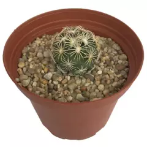
Cactus mediano de 0,03cm
Gracias a su tamaño pequeño, está muy extendido y es de fácil cultivo. Sus flores amarillas con puntas rojizas florecen durante la época de verano. Cuando son jóvenes, se recomienda ubicarlos en una zona de semi sombra
$1,990
- 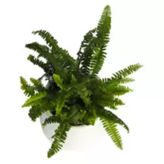
Planta helecho Ma
puede alcanzar una altura entre 1-1,5 metros, con peciolos largos y gruesos que sostienen los frondes y que presentan unas llamativas tonalidades de verde.
$32,990
- 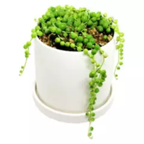
Planta Rosario 1
Es muy popular en jardinería y decoración debido a su peculiar aspecto y versatilidad. Sin embargo; puede ser un poco complicada de mantener con vida
$30,990
- 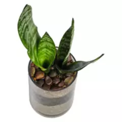
Planta Sansevieri
La sansevieria necesita muy poca agua y su llamativo color verde suma vitalidad a cualquier rincón. Además, ¡mejora el aire en tu casa!
$32,990
- 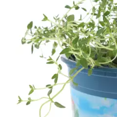
Planta Tomillo 0,05cm
Una de las plantas aromáticas más populares es el tomillo, no sólo por sus usos culinarios, sino porque esta planta procedente del Mediterráneo también cuenta con múltiples propiedades medicinales.
$1,290
- 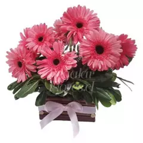
Felicia
La Margarita Azul o Felicia pa los pibes: ideal si queremos una planta resistente, con un crecimiento rápido, y que vive durante mucho tiempo con una floración duradera.
$35,990
- 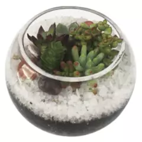
Sedum terrario 0,05m
Hay muchas variedades de plantas de Sedum, lo que las hace adecuadas para casi todos los tipos de diseños de jardines. Use variedades de Sedum de bajo crecimiento, en cubiertas de tierra y en jardines rocosos o con rocallas.
$12,990
- 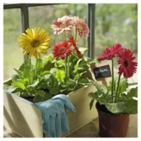
Gerbera 0,2m
Es una planta herbácea y vivaz, o perenne. Su cultivo puede durar varios años, aunque comercialmente sólo interesa cultivar durante dos o tres años. Las hojas tienen forma de roseta
$6,290

Ficus Benjamina exotica
Árbol con copa ancha y frondosa, normalmente con raíces aéreas, pudiendo alcanzar 20 m de altura.
$3,390
- 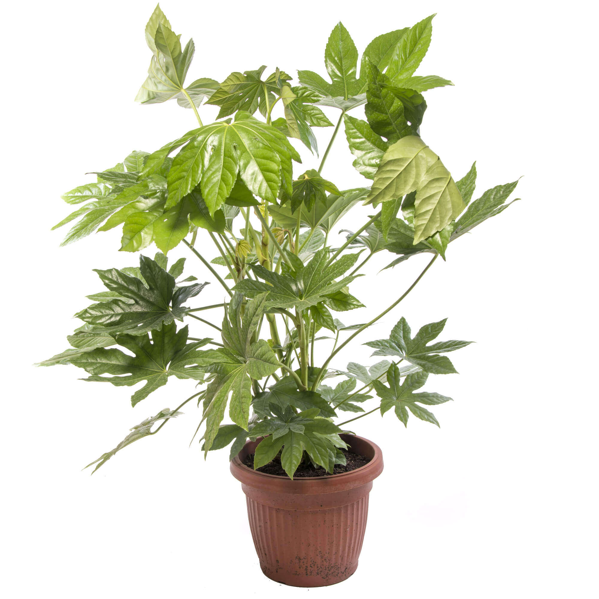
Aralia Japonica 30cm
arbusto siempreverde, de hasta 4 m de alto. Hojas con peciolo de 10-30 cm de longitud
$7,490

Garden Stars Osteospermum Blue Eyed
Se trata de un pequeño arbusto cuyo follaje se dispone en forma de roseta que puede alcanzar los 50-75 cm de altura.
$3,290

Aralia Dizygo Gemini 20cm
Este pequeño arbusto tiene hojas inusuales: están diseccionadas a los lados, tienen dientes pequeños y se asemejan a hojas de palma. A menudo, estos dientes están enmarcados por un tono claro contrastante
$6,490
- 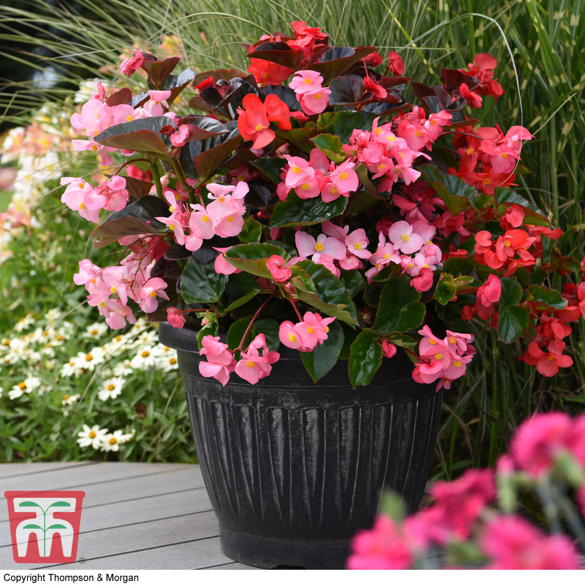
Begonia Megawatt 0,5 m
Planta perenne con hojas verdes, cafés brillantes y llamativas flores rosadas y rojas
$6,290
- 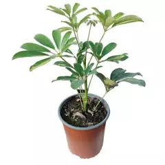
Schefflera Arboricola 30cm
Arbusto siempre verde de tallos largos y sin ramificar, a veces algo trepador, que puede alcanzar 3-4 m de altura, con las hojas palmaticompuestas
$3,990
- 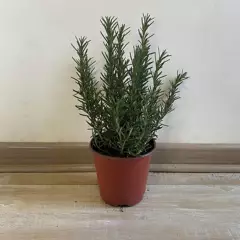
Romero arbustivo 20 cm
Este subarbusto perfumado pertenece a la familia de las labiadas (Labiateae). Puede medir de 50 a 150 cm de altura y es perenne, frondoso y muy ramificado.
$4,990